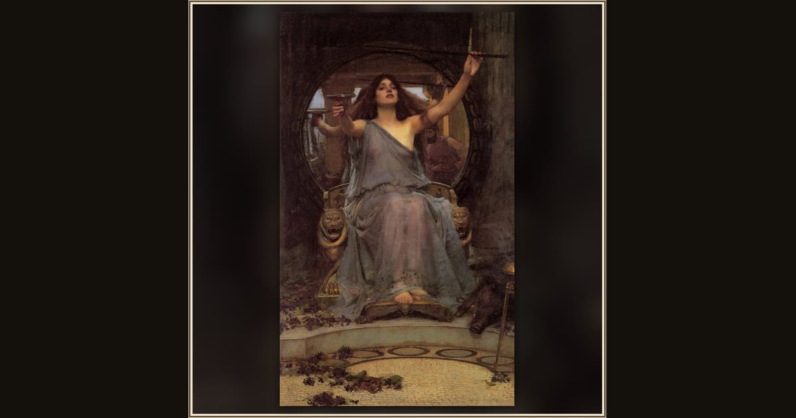

Circe Offering the Cup to Ulysses
John William Waterhouse · 1891 · Gallery Oldham · Oldham, England
The sorceress Circe holds out a magic cup and her wand, ready to enchant Ulysses — look for the pigs she has already made from his crew. Explore its place in Book X of the Odyssey.